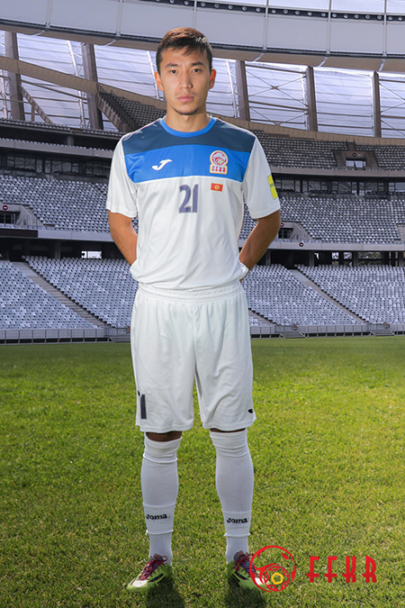

HISTORY OF FFKR
February 25, 1992 formed the independent Football Federation of the Kyrgyz Republic (FFKR). In 1994, the FFKR becomes a full member of the International Football Federation (FIFA) and the Asian Football Confederation (AFC)
President: Semetei Sultanov
COACHES
Alexander Krestinin
Position: Head Coach
Date of birth: 09/19/1978
Igor Kudrenko
Position: Ph.Training Coach
Date of birth: 11/13/1978
Zakir Jalilov
Position: Goalkeeper Coach
Date of birth: 07/30/1972
Evgeny Frolov
Position: Team Manager
Date of birth: 11/09/1986
Arstan Konokbayev
Position: Admin
Date of birth: 03/18/1992
PLAYERS
Pavel Matyash
Position: Goalkeeper
Date of birth: 07/11/1987
Club: FC Maziya (Maldives)
Valery Kashuba
Position: Goalkeeper
Date of birth: 09/14/1984
Club: FC Dordoi( Kyrgyzstan)
Valery Kichin
Position: Defender
Date of birth: 10/12/1992
Club: FC Enisey (Russia)
Victor Mayer
Position: Defender
Date of birth: 05/16/1990
Club: FC Videnburg (Germany)
Daniel Tego
Position: Defender
Date of birth: 03/03/1986
Club: FC Dordoi (Kyrgyzstan)
Anton Zemlyanuhin
Position: Forward
Date of birth: 09/16/1990
Club: FC Dordoi (Kyrgyzstan)
Vitaly Lux
Position: Forward
Date of birth: 02/27/1989
Club: FC Ulm 1986 (Germany)
Mirlan Murzaev
Position: Forward
Date of birth: 03/29/1990
Club: FC Somaspor (Turkey)
Bak Duyshobekov
Position: Midfielder
Date of birth: 03/06/1995
Club: FC Bashundhara (Bangladesh)
Islam Shamshiev
Position: Midfielder
Date of birth: 03/01/1991
Club: FC Dordoi (Kyrgyzstan)
Kairat Jyrgal uulu
Position: Midfielder

Date of birth: 13/06/1993
Club: FC Dordoi (Kyrgyzstan)
Pavel Sidorenko
Position: Midfielder
Date of birth: 03/26/1987
Club: FC Dordoi (Kyrgyzstan)
Edgar Bernhardt
Position: Midfielder
Date of birth: 03/30/1986
Club: FC Tychy (Poland)
Azamat Baimatov
Position: Defender
Date of birth: 12/03/1989
Club: FC Borneo (Malaziya)
Farhat Musabekov
Position: Midfielder
Date of birth: 01/03/1994
Club: FC Dordoi (Kyrgyzstan)
AWARDS